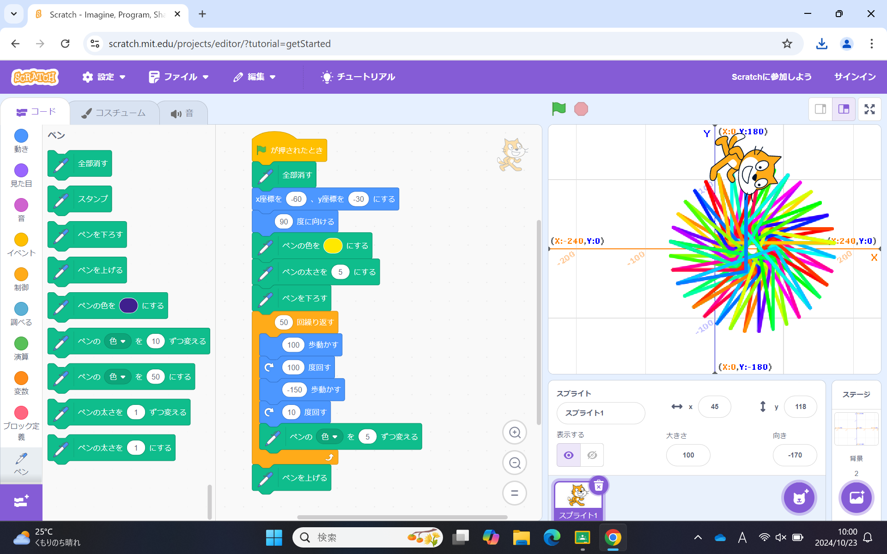
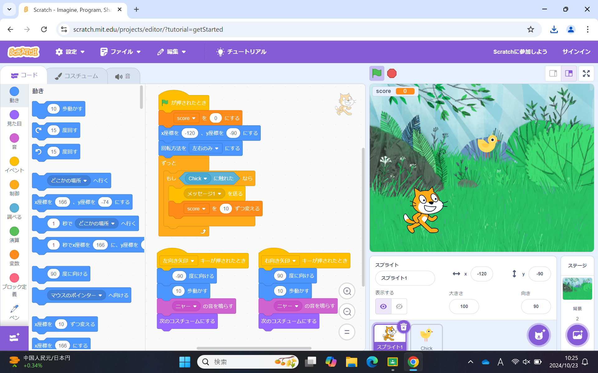

1週目のレポート ： 公大高専１年実習I-1
3b班31番 Matsuura699
第1週目
1-1 サイエンスアート

1.内容
スクラッチを使って線を書くプログラムを作成した。猫のキャラクターを初めにラインを引く開始地点に移動させ、 100歩前に進んで100°回転する、といった動作を複数回繰り返すことで、規則的な模様が完成する。
2.感想
一見歩数などの値を変更するだけで簡単に見えるが、歩数をうまく調整しないとラインがどこかに行ってしまったり、 回転の角度が1でも変わればそれだけで違った形の模様になることもあるため、想像より難しかった。
1-2 ゲーム

1.内容
スクラッチを使って鳥を捕まえるゲームを作成した。猫のキャラクターをキーボードの右と左のキーで操作することができ、 上からランダムな速度で落ちてくる鳥に触れると、スコアが10増えるゲームである。
2.感想
猫の操作など、ゲームの大まかな形を作り上げてから、得点の追加や背景など、詳細な部分を作りあげていく体験は、 ゲームという形で楽しみながらプログラミングの基礎を学習できたように感じた。
1-3 ホームページ作成
私のホームページ
1.内容
自分の自己紹介が書かれたホームページをgithubにて作成した。 ある程度作成されたテンプレートに自分の情報が置き換えられたホームページである。
2.感想
ホームページの制作となると、かなり技術的で難しいものである印象が強かったが、 自分の書いた文章が実際に反映されているのを見て、本当に誰でもホームページを作ることができるのだなと驚いた。
各ページへのリンク
1週目のレポート
2週目のレポート
3週目のレポート
私のホームページ